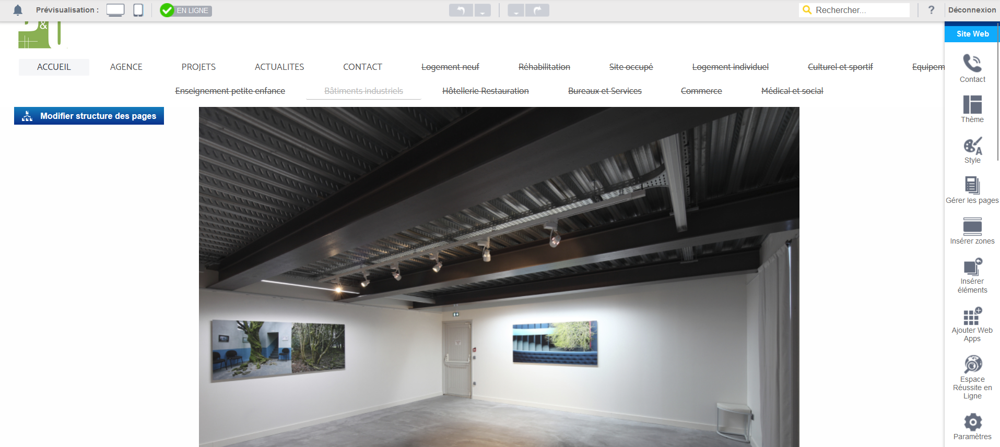
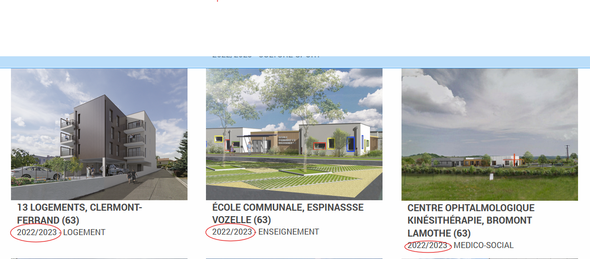

1. Comparaison des Hébergeurs
Dans cet article, je présente une comparaison entre plusieurs hébergeurs que j'ai explorés durant mon stage. Le tableau ci-dessous résume les principales caractéristiques :
| Critère |
IONOS |
OVH |
Hostinger |
| Stockage |
250 Go |
250 Go |
50 Go |
| Domaine + SSL |
Gratuit + Certificat SSL |
Gratuit + Certificat SSL |
10€ + Certificat SSL |
| Coût |
11€/mois |
6,59€/mois |
7,99€/mois |
J'ai utilisé ces hébergeurs pour diverses missions, et chaque option avait ses avantages et inconvénients en fonction des besoins du projet.
2. Mon Intégration dans l'Entreprise
J'ai commencé par rencontrer les membres de l'équipe et comprendre la culture de l'entreprise, ce qui a été essentiel pour une adaptation réussie.
3. Difficultés Rencontrées et Solutions Apportées

Au cours de mon stage, j'ai rencontré plusieurs difficultés techniques, notamment des problèmes d'intégration avec certains outils proposés par le stage.
4. Aspect Technique des Missions

Les aspects les plus techniques de mon stage ont consisté à mettre à jour l'ensemble du site internet de l'entreprise.
5. Bilan de Mon Stage
Mon stage au sein de l'agence d'architecture m'a permis de développer de nouvelles compétences, notamment en design et en gestion de bases de données.